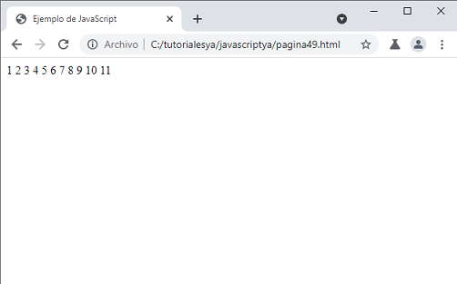
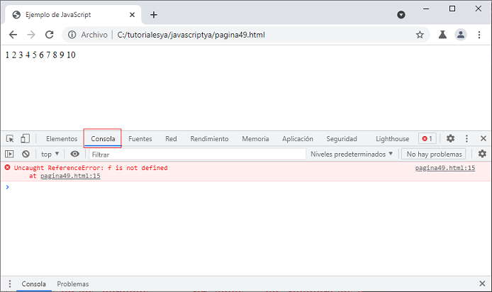
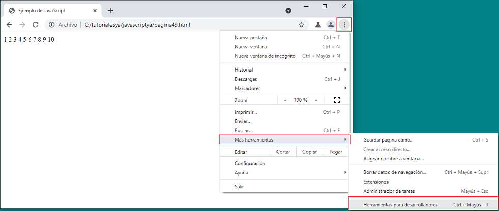

Listado completo de tutoriales
Estructura repetitiva (for) |
Cualquier problema que requiera una estructura repetitiva se puede resolver empleando la estructura while. Pero hay otra estructura repetitiva cuyo planteo es más sencillo en ciertas situaciones.
Esta estructura se emplea en aquellas situaciones en las cuales CONOCEMOS la cantidad de veces que queremos que se ejecute el bloque de instrucciones. Ejemplo: cargar 10 números, ingresar 5 notas de alumnos, etc. Conocemos de antemano la cantidad de veces que queremos que el bloque se repita.
Por último, hay que decir que la ejecución de la sentencia break dentro de cualquier parte del bucle provoca la salida inmediata del mismo.
Sintaxis:
for (<Inicialización> ; <Condición> ; <Incremento o Decremento>)
{
<Instrucciones>
}
Esta estructura repetitiva tiene tres argumentos: variable de inicialización, condición y variable de incremento o decremento.
Funcionamiento:
1 - Primero se ejecuta por única vez el primer argumento <Inicialización>.
Por lo general se inicializa una variable.
2 - El segundo paso es evaluar la (Condición), en caso de ser verdadera se ejecuta
el bloque, en caso contrario continúa el programa.
3 - El tercer paso es la ejecución de las instrucciones.
4 - El cuarto paso es ejecutar el tercer argumento (Incremento o Decremento).
5 - Luego se repiten sucesivamente del Segundo al Cuarto Paso.
Este tipo de estructura repetitiva se utiliza generalmente cuando sabemos la cantidad de veces que deseamos que se repita el bloque.
Ejemplo: Mostrar por pantalla los números del 1 al 10.
<!DOCTYPE html>
<html>
<head>
<title>Ejemplo de JavaScript</title>
<meta charset="UTF-8">
</head>
<body>
<script>
for (let f = 1; f <= 10; f++) {
document.write(f + " ");
}
</script>
</body>
</html>
Podemos definir la variable f directamente dentro del for si no se la requiere a dicha variable después del for. Como la condición se verifica como verdadera (1<=10) se ejecuta el bloque del for (en este caso mostramos el contenido de la variable f y un espacio en blanco). Luego de ejecutar el bloque pasa al tercer argumento del for (en este caso con el operador ++ se incrementa en uno el contenido de la variable f, existe otro operador -- que decrementa en uno una variable), hubiera sido lo mismo poner f=f+1 pero este otro operador matemático nos simplifica las cosas.
Importante: Tener en cuenta que no lleva punto y coma al final de los tres argumentos del for.
El disponer un punto y coma provoca un error lógico y no sintáctico, por lo que el navegador no avisará.
Acá ya podemos mostrar una ventaja de utilizar la palabra clave 'let' para definir la variable en lugar de la sintaxis antigua de JavaScript de utilizar la palabra clave 'var'.
Si utilizamos la palabra clave 'var' en principio el resultado es lo mismo:
<script>
for (var f = 1; f <= 10; f++) {
document.write(f + " ");
}
</script>
Pero si nos equivocamos y volvemos a mostrar la variable 'f' fuera del for:
Como podemos comprobar la variable 'f' sigue existiendo y tiene almacenado el valor '10' (gracias a dicho valor sale del for)
Si utilizamos la palabra clave 'let' la variable 'f' tiene existencia dentro del ámbito donde se la definió, en nuestro caso solo existe dentro del for, luego si codificamos:
<script>
for (let f = 1; f <= 10; f++) {
document.write(f + " ");
}
document.write(f + " ");
</script>
Podemos ver que el intérprete de JavaScript detecta como un error el acceso a la variable 'f' fuera del for:
La ventana de "Herramientas para desarrolladores" es de fundamental importancia para detectar los errores sintácticos y lógicos de nuestra aplicación. La podemos abrir presionando la tecla 'F12' o desde el menú de opciones:
Acotar el ámbito para el acceso a una variable es una muy buena práctica que nos va a evitar dolores de cabeza cuando tenemos programas grandes (cientos o miles de líneas)